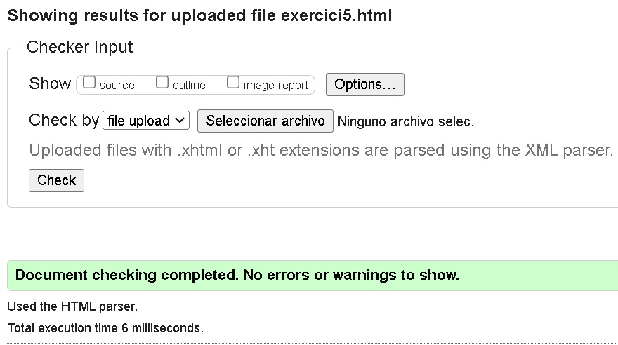

Lista de Definiciones
- HTTP
- El Protocolo de Transferencia de Hipertexto (HTTP) es el protocolo subyacente utilizado por la World Wide Web. Define cómo se transmiten y se reciben los mensajes.
- HTML
- El Lenguaje de Marcado de Hipertexto (HTML) es el estándar utilizado para la creación y el diseño de páginas web. Define la estructura y el contenido de las páginas.
- URL
- Un Localizador Uniforme de Recursos (URL) es una dirección que se utiliza para localizar un recurso en la web. Puede referirse a un documento, una imagen, un archivo, o cualquier otro recurso.
- TCP/IP
- El Protocolo de Control de Transmisión/Protocolo de Internet (TCP/IP) es el conjunto de protocolos que permite la comunicación en redes, incluida la Internet. Define cómo los datos deben ser enviados, divididos, direccionados y recibidos.
- Internet
- La Internet es una red global de redes interconectadas. Permite la comunicación y el intercambio de información entre dispositivos de todo el mundo.
- W3C
- El Consorcio World Wide Web (W3C) es una organización internacional que desarrolla estándares para la web con el objetivo de garantizar su crecimiento a largo plazo.
- Mozilla Foundation
- La Fundación Mozilla es una organización sin fines de lucro que promueve un Internet abierto y accesible. Desarrolla software de código abierto, incluyendo el navegador web Firefox.
